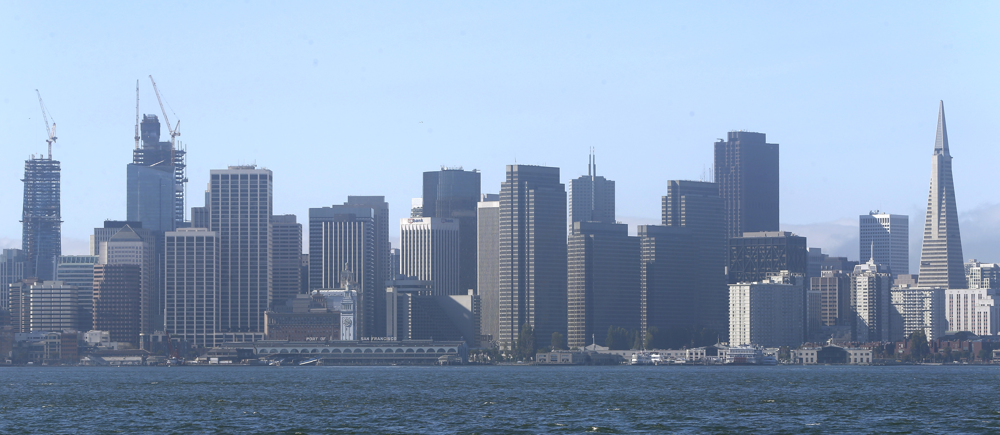

The SF skyline: 2009 to present
Move the slider to compare the SF skyline of 2009 (left) to the skyline today (right). The Transamerica Pyramid, seen here from Treasure Island, will soon be replaced as the tallest building in the city by the Salesforce Tower, currently under construction (second from left on 2016 image).

Photos: Paul Chinn / SF Chronicle
<%= t.include("partials/_helloSFC.html") %>